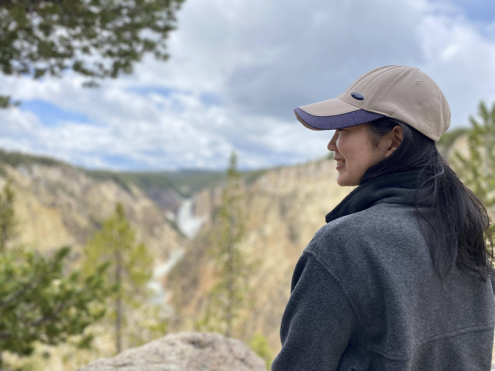

My github username is @hjkim015
Hi everyone! My name is Hannah, a rising sophomore at Harvard studying Computer Science and Government. I'm mostly studying those two subjects because I've always been pretty indecisive about choosing one over the other haha. I was born in Chicago, but consider Northern California my home as I've lived there for nearly all of my life. Outside of school, I like going on roadtrips and exploring national parks with my family. Can any of you guess which national park the picture above was taken? I also love to play volleyball, eat, and have occasional seasons of binge reading.
I'm really excited to get to know everyone through Ixperience. Whether it's by collaborating on assignments or going out into the city to explore food and scenic spots, I'm looking forward to it all. I'm on Spotify basically all the time, have Imessage, and Ig if you want to stay in touch during and after the program, whatever suits you best:)